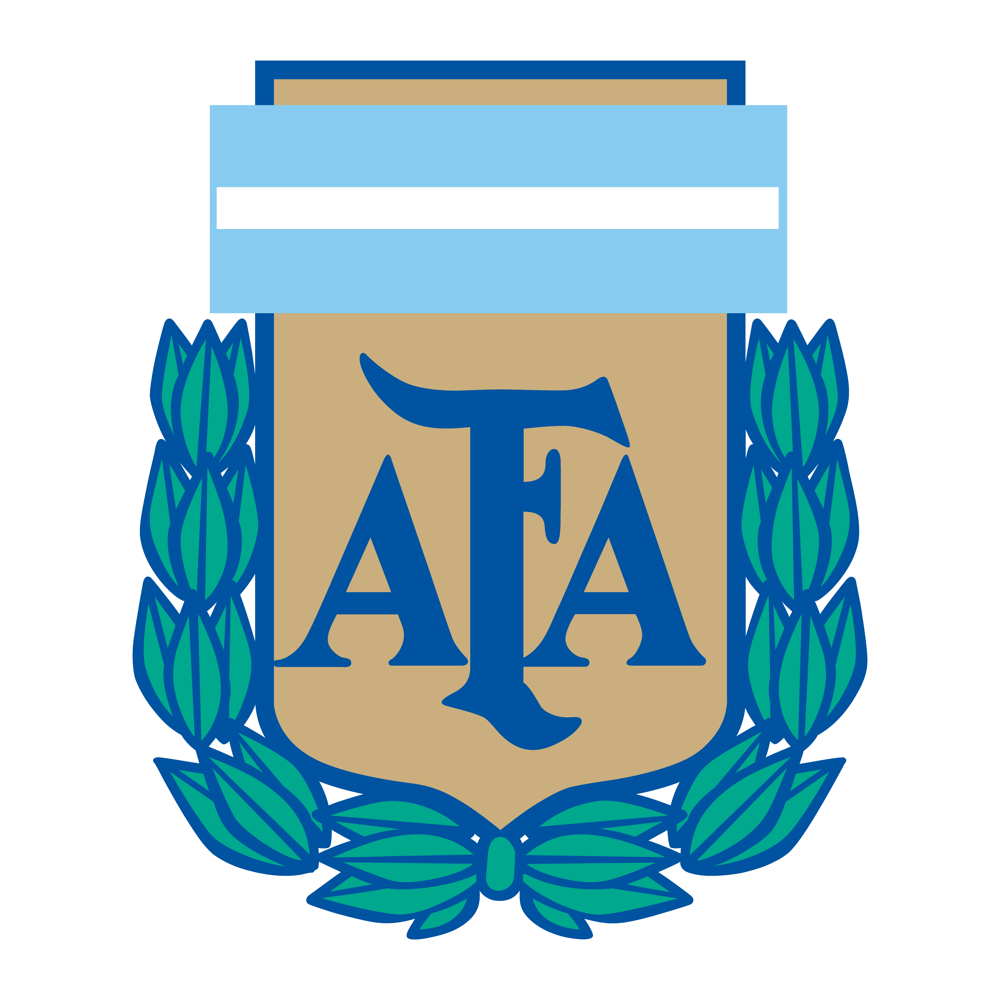
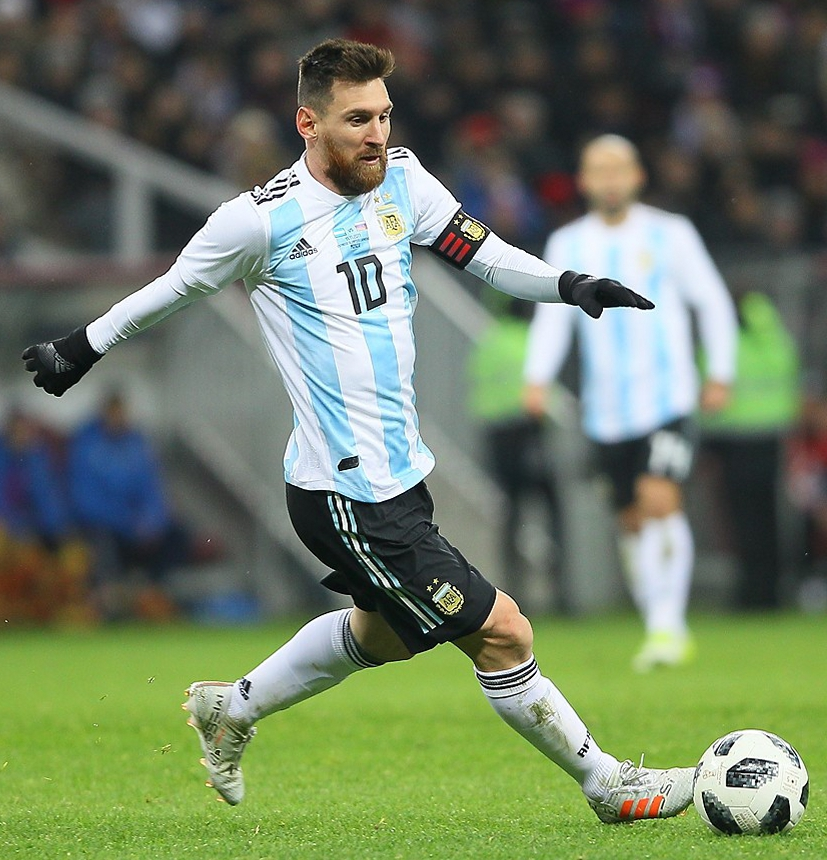

<-------------------------------------------------------------------LEO
MESSI-------------------------------------------------------------------->

Lionel Andrés Messi Cuccittini (Rosario, 24 de junio de 1987), conocido como Leo Messi, es un futbolista
argentino que juega como delantero o centrocampista. Jugador histórico del Fútbol Club Barcelona, al que
estuvo ligado veinte años, desde 2021 integra el plantel del Paris Saint-Germain de la Ligue 1 de Francia.
Es también internacional con la selección de Argentina, equipo del que es capitán.
Considerado con frecuencia el mejor jugador del mundo y uno de los mejores de todos los tiempos,10 es el
único futbolista en la historia que ha ganado, entre otras distinciones, siete veces el Balón de Oro, seis
premios de la FIFA al mejor jugador del mundo y seis Botas de Oro. En 2020, se convirtió en el primer
futbolista y el primer argentino en recibir un premio Laureus, además de ser incluido en el Dream Team del
Balón de Oro.
Goleador prolífico, ostenta, entre otros, los récords por más goles en una temporada,11 en un año
calendario (en 2012, con 86 tantos, ingresó en el Guinness World Records) y en un mismo club, además de ser
máximo goleador de La Liga, la Supercopa de España, la Supercopa de Europa y jugador no europeo con más
goles en la Liga de Campeones de la UEFA. Es también el máximo goleador del Barcelona y de la selección
argentina y el futbolista con más asistencias, desde que se tienen registros, en partidos oficiales.
En 1999, el equipo italiano Como tuvo la oportunidad de ficharlo, pero finalmente no lo hizo por las
dificultades que presentaba la mudanza de la familia.20 Al año siguiente, tras haber sido reclutado por
Federico Vairo en Rosario, Messi fue a Buenos Aires a probarse a River Plate. Eduardo Abrahamian, encargado
de las divisiones infantiles del club, pidió su contratación, pero esta nunca se concretó.
El 3 de septiembre, con trece años, dio su primera entrevista a un medio de comunicación en el suplemento
"Pasión Rojinegra" del diario La Capital de Rosario.
Dos ojeadores de Buenos Aires, enterados del paso de Messi por River, se pusieron en contacto con su socio
en Barcelona, Horacio Gaggioli, quien a su vez se comunicó con el agente Josep María Minguella. Minguella
decidió llamar a Carles Rexach para pedirle que probaran al jugador.
Nacido y criado en la ciudad de Rosario, a los 13 años se radicó en España, donde el Barcelona accedió a
pagar el tratamiento de la enfermedad hormonal que le habían diagnosticado de niño. Después de una rápida
progresión a través de la Academia juvenil del Barcelona, hizo su debut oficial con el primer equipo en
octubre de 2004, a los diecisiete años. A pesar de ser propenso a lesiones en los inicios de su carrera, ya
en 2006 se estableció como jugador fundamental para el club. Su primera campaña ininterrumpida fue la
temporada 2008-09, en la que el Barcelona alcanzó el primer triplete del fútbol español.
Con apenas cuatro años, comenzó a practicar fútbol en el club Abanderado Grandoli, ubicado al sur de
Rosario, en el barrio Grandoli, a pocas cuadras de su casa.16 Su primer entrenador fue Salvador
Aparicio. En 1994, comenzó a entrenarse en las divisiones inferiores de Newell's Old Boys. A la edad
de ocho años, le fue diagnosticada una deficiencia de la hormona de crecimiento. Durante un año y medio,
el tratamiento, de 900 dólares mensuales, lo cubrieron su obra social y Acindar, siderúrgica en la que
trabajaba su padre.

Como internacional argentino, Messi ha representado a su país en diez torneos mayores. A nivel juvenil, ganó
junto con la selección sub-20 la Copa Mundial de Fútbol Sub-20 de 2005, torneo en el que finalizó como mejor
jugador y máximo goleador, y una medalla de oro en los Juegos Olímpicos de 2008, con la sub-23. Por su
estilo de juego de pequeño driblador zurdo, se lo comparó con su compatriota Diego Maradona quien, en
2007, declaró al adolescente su «sucesor». Después de debutar en la selección mayor en agosto de 2005, en el
Mundial de Alemania 2006 se convirtió en el argentino más joven en jugar y en marcar en un mundial. Al año
siguiente, en la Copa América, fue nombrado mejor jugador joven del torneo. Como capitán desde agosto de
2011, llegó con su equipo a las finales del Mundial de Brasil 2014, de la Copa América 2015 (certámenes en
los que fue elegido mejor jugador del torneo) y de la Copa América Centenario, además de ganar la Copa
América 2021 ante Brasil en el Maracaná y la Finalissima ante Italia en Wembley en 2022
Joa Carretero - 2022 - Laboratorio de Aplicaciones